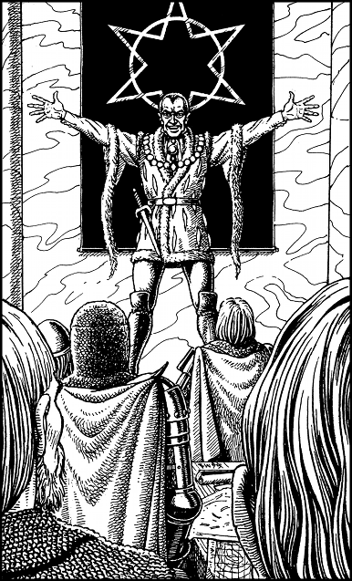

50
‘My loyal commanders,’ says Vandyan, spreading his arms wide as if to embrace the entire hall, ‘we stand upon the threshold of total power. Already I have harnessed the might of the first rune and used it to create and control the Vorka horde. With the power of the second stone I summoned Zorkaan the Soultaker and bound him to our cause. And this night, we shall witness the release of the force contained within the third Rune of Agarash. The approaching storms from the north herald the rebirth of the Vaag, the flying spawn of Agarash the Damned!’

Vandyan’s announcement draws a loud gasp of astonishment from his officers. Legend has it that the Vaag were the most ruthless and deadly of all the Agarashi—the creatures of darkness created by Agarash the Damned. He used the Vaag to spearhead assaults upon ancient Magnamund that led to his domination of the entire planet during the Age of Eternal Night. Unhindered by mountains, rivers, and city walls, a flying horde of Vaag could indeed be a force capable of conquering Magnamund anew.
‘Go now!’ says Vandyan, to his stunned officers. ‘Return to your armies in the field and be ready to march. You have your orders—do not fail me. I must now return to my laboratory and attend to the final preparations. Be assured, my loyal countrymen. Soon all Magnamund shall cower at our feet!’
Vandyan’s final words are met with a thunderous roar of approval. The door in the north wall opens and he leaves the dais and hurries through it. As the door closes behind him with a dull boom, the Eldenoran officers gather up their maps and papers and file out of the hall, through a pair of double doors which have opened in the south wall.
If you wish to leave this hall with the Eldenoran officers by way of the south doors, turn to 104.
If you wish to hide in this hall and await your chance to follow Vandyan through the north door, turn to 319.